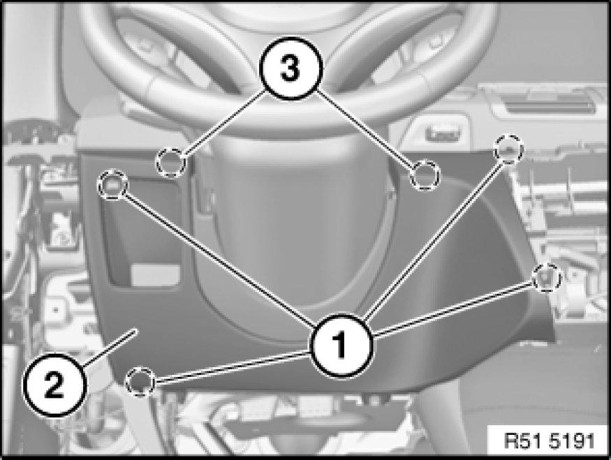

51 45 180 Removing and Installing Trim For Instrument Panel, Bottom Left
51 45 180 - Removing and installing trim for instrument panel, bottom left

Necessary preliminary tasks:
- Remove outer finisher 51 45 270 Removing and Installing or Replacing Outer Trim Cover on Lower Left Dashboard Trim Panel on instrument panel trim
- Remove decorative strip 51 16 221 Replacing A Clip-Mounted Trim (Decorative Strip on Instrument Panel Trim) on instrument panel trim
- Release instrument panel trim, middle 51 45 310 Removing and Installing (Replacing) Centre Trim For Instrument Panel (do not remove)

Note:
To facilitate removal, move driver's seat fully towards rear.

Release screws (1).
Unclip trim (2) downwards from catches (3).
Installation:
Catches (3) must not be damaged.